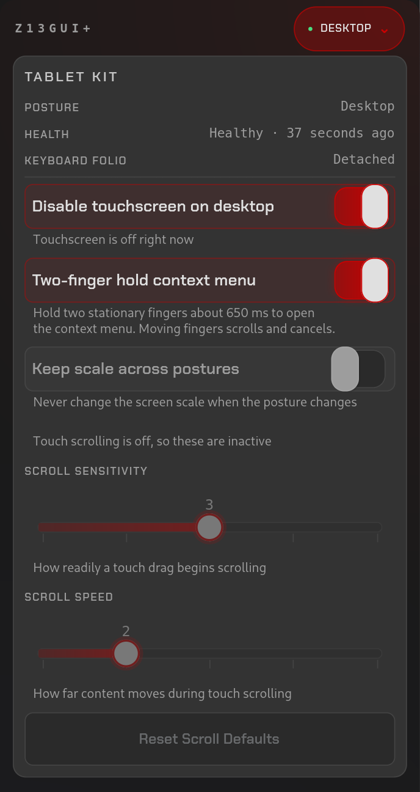

A posture-aware tablet mode for the 2025 ASUS ROG Flow Z13 (GZ302, AMD Strix Halo) on Linux with KDE Plasma 6 and Wayland. It detects whether the Z13 is docked, used as a laptop with the keyboard folio, or held as a tablet, and adapts the touchscreen, display scale, auto-rotate and on-screen keyboard. No kernel patches; the only root-owned pieces are two udev rules and a login-screen config file.
Source on GitHub · AUR package · Changelog

Requirements and quick start are in the README; source install and uninstall are in docs/INSTALL.md.